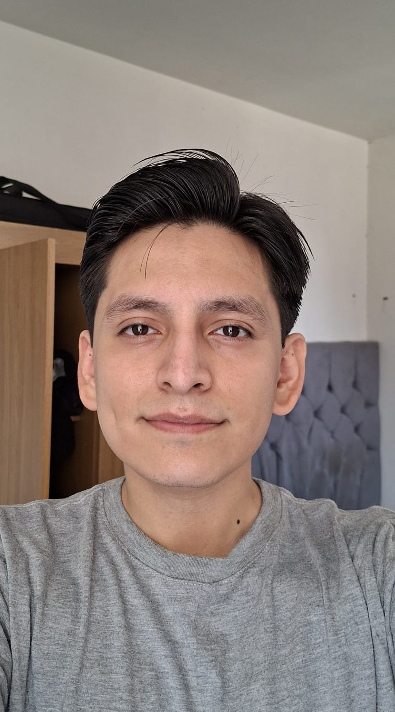
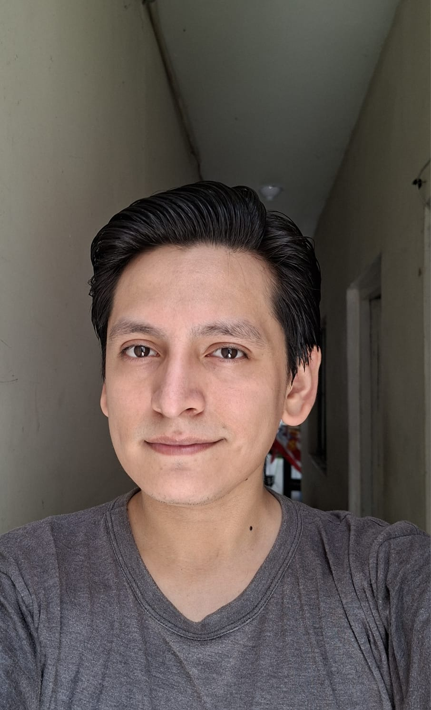
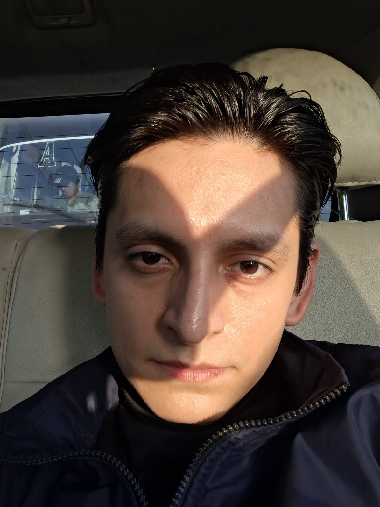
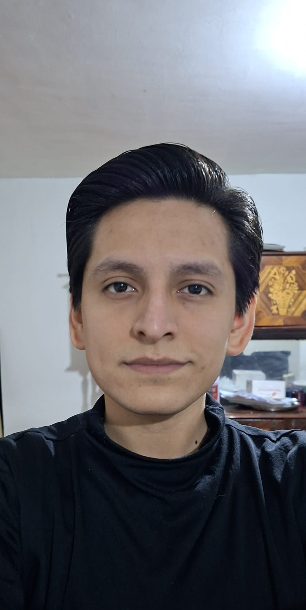
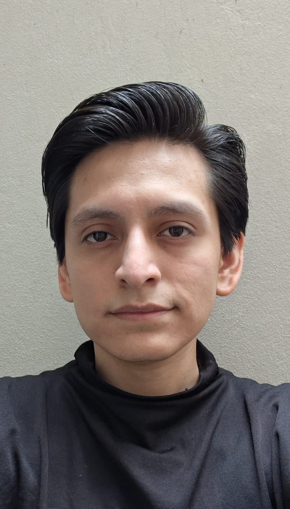
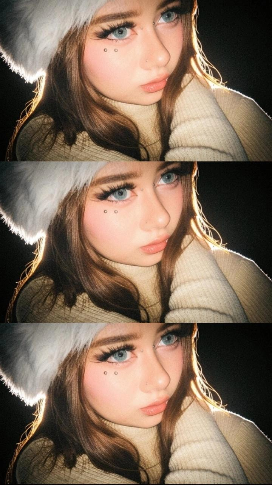
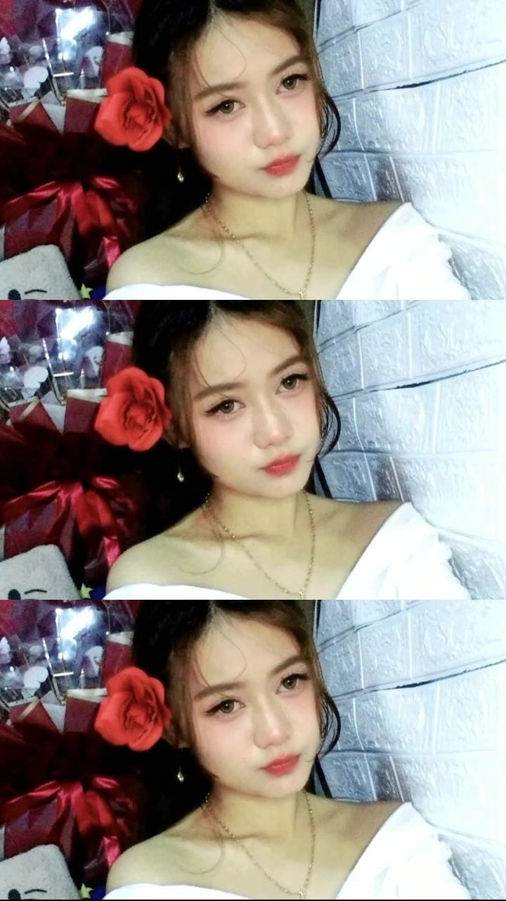

Sebuah pesan dari Lima, untuk seseorang yang menyambut pagi di belahan dunia lain.







Kita sudah mengobrol selama
Amelia,
Kita bertemu di aplikasi Bumpy, dan koneksinya terasa hampir instan. Aku tidak menyangka akan menemukanmu, tapi ternyata itu terjadi juga. Jam-jam yang kita habiskan mengobrol adalah bagian terbaik dari beberapa minggu terakhir ini.
Sore itu aku melewatkan final Piala Dunia karena terlalu sibuk mengobrol denganmu. Aku tidak menyesal — hasilnya lebih baik daripada adu penalti mana pun.
Hampir 18.000 kilometer dan dua belas jam memisahkan kita, tapi setiap percakapan tetap terasa sedikit lebih dekat dari yang sebelumnya.
Aku belum tahu pasti ini apa. Tapi aku ingin ini ada di suatu tempat selain chat kita — sesuatu yang bisa kamu buka dan tahu bahwa aku memikirkanmu, meskipun matahari terbit di jam yang berbeda untuk kita berdua.
— Elías
Sus flores favoritas
Rosas
Edelweiss